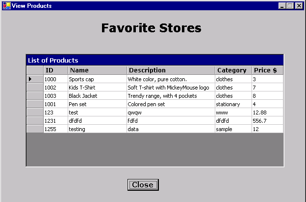

View Products - Populate Dataset through Oracle Provider for OLEDB
Table of Contents |
- Overview of the Sample Application
- User Notes with Screen Shots
- Required Software
- Extracting the Sample
- Database Setup
- Preparing and Running the Sample
- Description of Sample files
Overview of the Sample Application |
|
| This .NET sample application aims at demonstrating
how to populate a DataSet through Oracle Provider for OLE DB . The
Oracle9i Release 2 OLE DB provider introduces full support for .NET
via the Microsoft OLE DB .NET data provider. With OLE DB .NET, applications
can access the Oracle database from any .NET programming language.
OLEDB .NET Data Provider provides a collection of classes that are
used to access database. Figure 1.1, describes how the
data is accessed using OLEDB .NET Provider.
DataSet is a major component of ADO .NET. It is an in-memory cache of the data retrieved from the database. OleDbDataAdapter represents a set of data commands and a database connection that are used to fill the Dataset based on the query given. OleDbCommand represents SQL statements to execute against datasource. OleDBConnection is used to build the database connection. This sample application is a Visual Basic .NET Application that displays a product catalog for a product store. When this sample is run, a list of products from database appears in a DataGrid (in tabular format). The DataGrid gets populated from a DataSet which is filled by a DataSource using OleDbDataAdapter. Hence demonstrating how to populate DataSet through Oracle Provider for OLE DB. |
User Notes with Screen Shots |
|
On clicking the 'Close' button, the application gets closed.

Figure 1.2 Screen Shot for DataSet Populate VB Sample
Required Software |
|
| 1. Visual C# installed with MS
Development Environment 7.0 version (MS Visual Studio .NET)
including MS .NET Framework 1.0 version
2. Oracle8i Database or later running SQL*Net TCP/IP listener (can be downloaded here ) 3. Oracle Provider for OLE DB (can be downloaded here) |
Extracting the Sample |
|
in the creation of 'DSPopulateVB' directory. Refer Description of Sample Files section for more details.
Database Setup |
|
SQL prompt
SQL> @<your directory structure>\DSPopulateVB\setup\DatabaseSetup.sql
This creates a user "OraNet"
with password "OraNet". All the database objects required by the application
are created and populated
with initial data.
Following is the list of database objects that get created by running DatabaseSetup.sql file.
| Object Name | Description |
| Products | Table that store information about products. |
| Printmedia | Table that stores information about the advertisement related to products. |
| Prodid_seq | Sequence for auto generating Product ID. |
| Adid_seq | Sequence for auto generating Advertisement ID. |
| Populate_ADID | Trigger for populating value of Ad_ID field from Adid_seq sequence, on insertion. |
| PopulateProduct_ID | Trigger for populating value of Product_ID field from Prodid_seq sequence, on insertion. |
Preparing and Running the Sample |
|
2. Open DSPopulateVB.sln using Visual Studio .NET from <your-directory-structure>\DSPopulateVB\src folder.
3. Edit ConnectionParams.vb file to change the database connection parameters
i.e.TNSName for database
you want to use . Save this file.
4. Ensure that the following .NET Component References have been added
to DSPopulateVB project:
System,
System.Data,
System.Drawing,
System.Windows.Forms,
System.XML.
To add the above .NET Components
a)Go to Menu ->View-> Solution Explorer.
b)Right click on DSPopulateVB project, choose
'Add Reference'.
c)Choose the above .NET Components from the
list displayed.
d)Click 'Select', then OK.
e) The chosen .NET component gets added to
the project.
5. Build and run the sample.
Description of Sample Files |
|
| Directory | File Name | Description |
| DSPopulateVB\doc | Readme.html | This file |
| blaf.css | This is a cascading stylesheet applied to Readme.html | |
| DSPopulateVB\doc\images | This folder contains images used in the Readme.html file | |
| DSPopulateVB\src\ | DSPopulateVB.sln | Microsoft Visual Studio Solution |
| DSPopulateVB.suo | Solution User option (this file gets automatically generated when a Visual Studio Solution is created) | |
| DSPopulateVB\src\ | ConnectionParams.vb | This Visual Basic file contains parameters for database connection |
| ViewProductsFrm.vb | This Visual Basic file contains source code for UI of this sample application and its functionality | |
| DSPopulateVB.vbproj | Visual Basic project file | |
| DSPopulateVB.vbproj.user | Visual Studio Project User Options (this file gets automatically generated when a Visual Studio Project is created). | |
| ViewProductsFrm.resx | .NET XML Resource Template (this file gets automatically generated when a Visual Studio Project is created) | |
| DSPopulateVB\setup | DatabaseSetup.sql | This is a SQL script file |
Please enter your comments about this sample in the OTN Sample Code Discussion Forum.